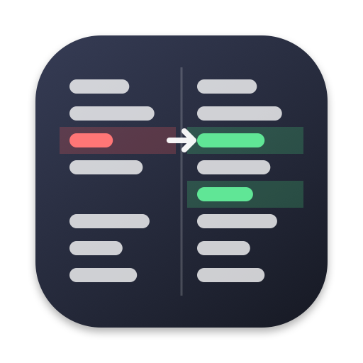
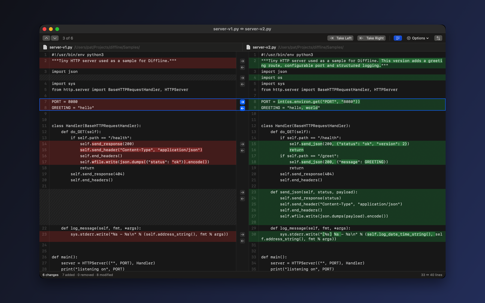
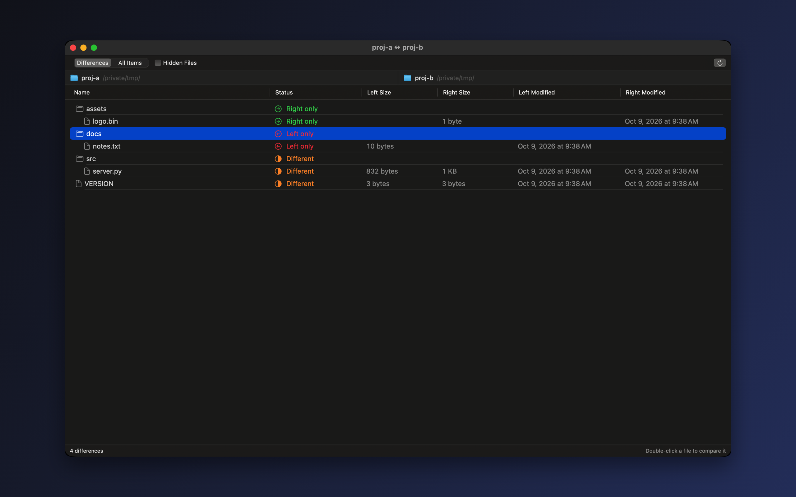
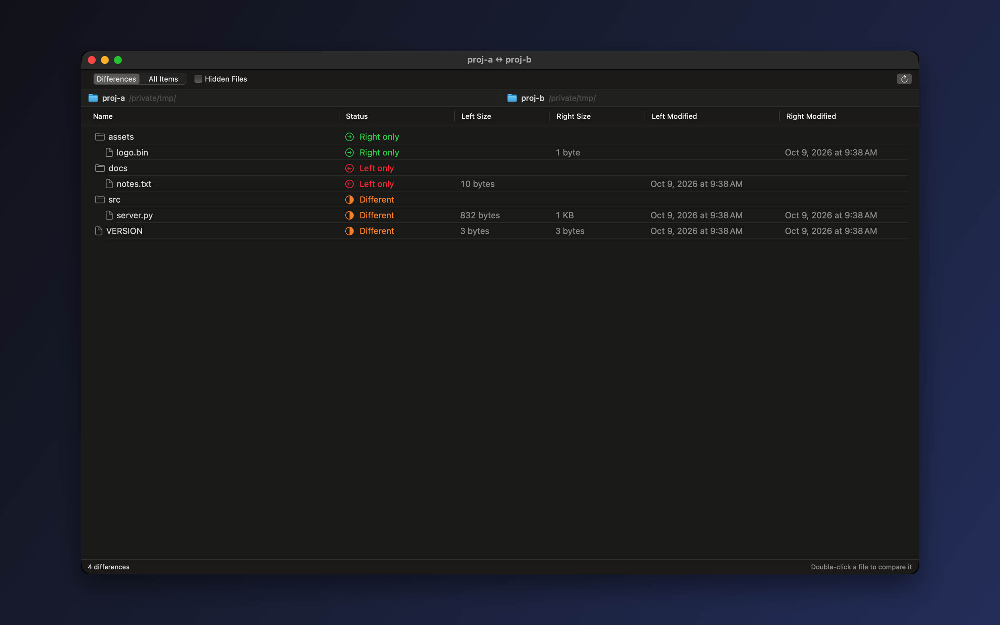

Diffline
A native macOS tool to compare two files or folders, merge changes between them, and resolve git conflicts, with every change lined up side by side.
Homebrew
Installs the app and the diffline command.
brew install --cask patbonecrusher/tap/diffline


What it does
Aligned, word by word
Changed lines sit next to each other and the words that differ are highlighted. Long lines wrap on both sides without breaking the alignment.
Merge with one click
Arrows between the panes copy a change left or right. Undo is one ⌘Z away, and ⌘S writes the result.
Three-way merge
Base, yours and theirs with the result in the middle. Take left, right, both or the original for each conflict.
Works with git
The diffline command plugs into git mergetool and git difftool. Set it up in four lines.
Folders too
Compare two folders recursively, show only the differences, and open any pair of files side by side.
Syntax coloring
Swift, Python, JavaScript, TypeScript, Go, Rust, C, Java, Kotlin, JSON, YAML, HTML, CSS, Markdown, shell and more.
See the whole file
A strip beside the scroll bar marks every change in the file. Click it to jump straight there.
Noise control
Ignore trailing or all whitespace, case, or blank lines when they don't matter.
Patches
Export or copy a unified diff for any comparison, ready for git apply or a code review.
Fits the Mac
Drop two items on the window or the Dock icon, or choose Compare with Diffline from the Services menu in Finder.
Your files stay on your Mac. Diffline runs in the macOS App Sandbox, opens only the files you give it, and makes no network connections. There are no accounts and no analytics. See the Privacy Policy.
Contact
Bug reports and feature requests are welcome on GitHub Issues. The source code is on GitHub.